9. Sistemas variantes en el tiempo
Semana 10
La parte 7 y la parte 8 trataron sistemas \(\dot x=f(x)\). En control, sin embargo, casi todo termina siendo variante en el tiempo: el error de seguimiento de una referencia que se mueve, un parámetro que oscila (la ecuación de Mathieu), la adaptación. Entonces la solución depende de la hora de arranque \(t_0\), y aparecen preguntas nuevas: ¿la estabilidad es igual de buena para todo \(t_0\) (uniformidad)? ¿Qué significa que \(V(t,x)\) sea definida positiva? ¿Por qué los valores propios de \(A(t)\) no deciden nada? Y, al final, ¿cómo se prueba que un equilibrio es inestable?
Al terminar esta parte usted podrá
- Explicar por qué la solución de \(\dot x=f(t,x)\) depende del instante inicial y distinguir estabilidad, estabilidad uniforme, estabilidad asintótica y estabilidad asintótica uniforme.
- Usar las funciones de comparación (\(\mathcal K\), \(\mathcal K_\infty\), \(\mathcal{KL}\)) para escribir cotas uniformes, y reconocer cuándo una función no es de esas clases.
- Aplicar los teoremas de Lyapunov con \(V(t,x)\): verificar que \(V\) es definida positiva, decreciente y radialmente no acotada, y calcular \(\dot V\) sin olvidar \(\partial V/\partial t\).
- Reconocer los errores clásicos de los sistemas variantes: valores propios “congelados”, linealización no uniforme y \(\dot V<0\) sin una cota independiente de \(t\).
- Cerrar la brecha de \(\dot V\le0\) (LaSalle periódico, Floquet, LaSalle–Yoshizawa con Barbălat) y probar inestabilidad con los teoremas de inestabilidad y de Cetaev.
Ruta de las clases
| Semana | Qué se ve | Capítulo | Scripts |
|---|---|---|---|
| 10 (primera sesión) | La hora de arranque; US, AS, UAS, GUAS; funciones de comparación; Lyapunov con \(V(t,x)\) y la trampa de \(\dot V<0\) | §9.1–9.4 | C9_Ej1–C9_Ej4 |
| 10 (segunda sesión) | Mathieu, ganancia variable, Markus–Yamabe y linealización; \(\dot V\) semidefinida con Barbălat; inestabilidad y Cetaev | §9.5–9.7 | C9_Ej5–C9_Ej11, crearModelo_MathieuAmortiguada |
Lo esencial, en una página
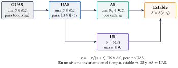
Uniformidad
La hora de arranque importa
Para \(\dot x=-x/(1+t)\), \(x(t)=x_0(1+t_0)/(1+t)\): el tiempo para bajar de \(0.1\) es \(9(1+t_0)\), es decir \(9\) si se arranca en \(t_0=0\) y \(909\) si se arranca en \(t_0=100\). El origen es uniformemente estable y asintóticamente estable, pero no uniformemente asintóticamente estable.
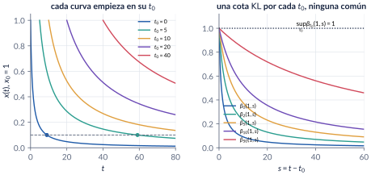
Uniformidad con funciones de comparación (Khalil, Lema 4.5)
El origen es UAS si y solo si existen \(\beta\in\mathcal{KL}\) y \(c>0\), independientes de \(t_0\), con \(\|x(t)\|\le\beta(\|x(t_0)\|,t-t_0)\) para todo \(t\ge t_0\ge0\) y \(\|x(t_0)\|<c\); GUAS si vale para todo \(x(t_0)\).
Trampa: “\(re^{-sr}\) decae a cero, luego es de clase \(\mathcal{KL}\)”
Para \(s>0\) tiene un máximo en \(r=1/s\): una condición inicial más grande recibiría una cota más pequeña. Hay que revisar las dos variables: estrictamente creciente en \(r\), decreciente a cero en \(s\).
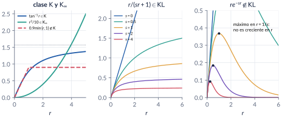
Lyapunov con \(V(t,x)\)
Khalil, Teoremas 4.8–4.10
Si \(W_1(x)\le V(t,x)\le W_2(x)\) (\(V\) definida positiva y decreciente) y \(\dot V=\partial V/\partial t+\nabla V\cdot f\le-W_3(x)\), el origen es UAS; con \(W_1\) radialmente no acotada, GUAS. Con \(k_1\|x\|^a\le V\le k_2\|x\|^a\) y \(\dot V\le-k_3\|x\|^a\), \(\|x(t)\|\le(k_2/k_1)^{1/a}\|x(t_0)\|e^{-\frac{k_3}{ak_2}(t-t_0)}\).
Trampa: “\(\dot V=\nabla V\cdot f\), como siempre”
Con \(\dot x=-x/10\) y \(V=(2+\sin t)x^2\), olvidar \(\partial V/\partial t\) da \(\dot V<0\) siempre; la derivada correcta, \((\cos t-0.2(2+\sin t))x^2\), vale \(0.6x^2>0\) en \(t=0\).
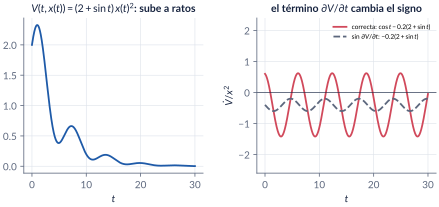
Trampa: “\(V>0\) y \(\dot V<0\), luego asintóticamente estable”
\(\dot x=-x/(1+t)^2\) con \(V=x^2\): \(\dot V=-2x^2/(1+t)^2<0\) fuera del origen, y \(x(t)\to x_0e^{-1/(1+t_0)}\neq0\) (\(0.368\) con \(t_0=0\), \(0.913\) con \(t_0=10\)). Hace falta \(\dot V\le-W_3(x)\) con \(W_3\) independiente de \(t\).
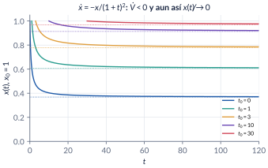
Ejemplos y sistemas lineales variantes
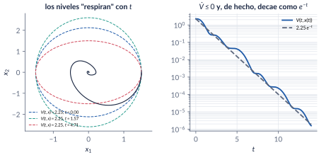
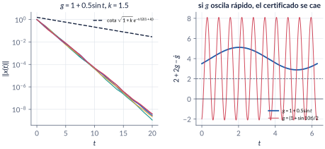
Trampa: “si \(A(t)\) es Hurwitz para cada \(t\), el sistema es estable”
Markus–Yamabe: los valores propios de \(A(t)\) son \(-\frac14\pm j\frac{\sqrt7}{4}\) para todo \(t\), y \(\Phi(t,0)\) tiene la columna \(e^{t/2}(\cos t,-\sin t)\): desde \((1,0)\), \(\|x(t)\|=e^{t/2}\).
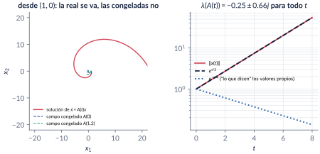
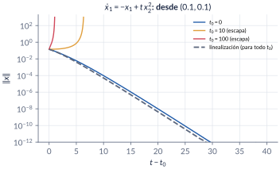
Cuando \(\dot V\) es solo semidefinida
LaSalle–Yoshizawa y Barbălat
- Con \(V\) definida positiva y decreciente y \(\dot V\le-W(x)\le0\): las soluciones están acotadas y \(W(x(t))\to0\).
- Derive la variable que ya converge; si su derivada segunda está acotada, Barbălat da que su derivada tiende a cero.
- Lea la variable que falta de la ecuación. En Mathieu: \((2+\sin t)x_1=-\dot x_2-x_2\to0\).
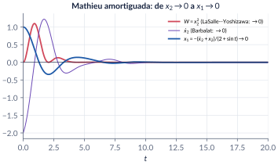
Inestabilidad
Cetaev (Khalil, Teorema 4.3)
Si \(V(0)=0\), \(V\) toma valores positivos arbitrariamente cerca del origen y \(\dot V>0\) en \(U=\{x\in\bar B_r:V(x)>0\}\), el origen es inestable. Para \(\dot x=f(t,x)\): con \(V\) decreciente, \(\dot V\ge W(x)\) definida positiva (primer teorema) o \(\dot V-\lambda V\ge0\) (segundo teorema).
Trampa: “inestable quiere decir que se va a infinito”
En van der Pol el origen es inestable y todas las soluciones están acotadas: terminan en el ciclo, con \(1.53\le\|x\|\le2.83\). Desde \((\delta,0)\) la solución sale de \(B_1\) en \(t\approx2\ln(1/\delta)\), por pequeño que sea \(\delta\).
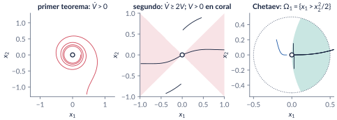
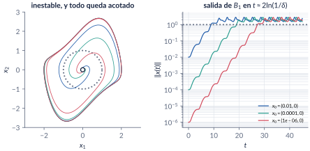
Explorador interactivo
Tres pestañas. Todo se calcula en su navegador (Runge–Kutta de paso fijo), con los mismos modelos de C9_Ej1–C9_Ej11.
Retos con el explorador
- Hora de arranque: con \(a(t)=1/(1+t)\), ¿cuánto tarda la curva azul con \(t_0=300\)? Cambie a \(2+\sin t\): ¿depende ahora de \(t_0\)?
- Hora de arranque: con \(a(t)=1/(1+t)^2\), ¿a dónde llega cada curva? ¿Por qué \(\dot V<0\) no basta?
- Lineales periódicos: en Markus–Yamabe, baje \(a\) desde \(1.5\). ¿Para qué \(a\) el multiplicador cruza \(1\)? ¿Cambian los valores propios congelados?
- Lineales periódicos: en Mathieu, ponga \(b=0\) y busque valores de \(k_0\) y \(k_1\) con \(|\mu|>1\) (resonancia paramétrica). ¿Qué hace la solución?
- Lineales periódicos: en la ganancia variable, mueva \(\omega\). ¿Hay algún \(\omega\) que la vuelva inestable? Compare con la condición \(\dot g\le g\).
- Inestabilidad: en Cetaev con \(V=x_1\), ¿dónde están las celdas coral? Láncelas desde allí: ¿sale la solución de la bola de todos modos?
- Inestabilidad: en el segundo teorema, lance soluciones desde la zona donde \(V<0\). ¿Qué pasa con \(V\)?
Códigos de esta parte
Los bloques salen directamente de los archivos del repositorio. Ejecute antes iniciarCurso. verificarCap09 comprueba los números del capítulo (51/51). Ningún script necesita toolboxes.
El tiempo de asentamiento \(9(1+t_0)\) (§9.2).
f = @(t, x) -x/(1 + t);
for t0 = [0 5 10 20 40 100]
tf = t0 + 12*(1 + t0);
[t, x] = ode45(f, linspace(t0, tf, 20001), 1, opc);
T = t(find(x < 0.1, 1)) - t0; % primer instante bajo 0.1
fprintf('t0 = %5.1f: T(0.1) = %8.2f (fórmula 9(1 + t0) = %6.0f)\n', t0, T, 9*(1 + t0));
end
% una cota KL por cada t0: beta_t0(r, s) = r (1 + t0)/(1 + t0 + s); su sup en t0 es r
s = 50; fprintf('beta_t0(1, %d) para t0 = 0, 100, 1e4: %.3f %.3f %.3f\n', s, ...
1/(1 + s), 101/(101 + s), 10001/(10001 + s));Las dos condiciones de la clase \(\mathcal{KL}\) (§9.3).
[R, S] = meshgrid(linspace(1e-3, 10, 801), linspace(0, 10, 801));
cand = {@(r, s) r.^2./(1 + s), @(r, s) r.*exp(-s.*r), ...
@(r, s) min(r, 1).*exp(-s), @(r, s) r./(1 + s) + r.*exp(-s)};
nombre = {'(a) r^2/(1+s)', '(b) r e^{-sr}', '(c) min(r,1) e^{-s}', '(d) r/(1+s) + r e^{-s}'};
for k = 1:4
B = cand{k}(R, S);
enR = all(all(diff(B, 1, 2) > 0)); % estrictamente creciente en r
enS = all(all(diff(B, 1, 1) <= 1e-15)); % (y tiende a 0: analítico)
fprintf('%-24s creciente en r: %d decreciente en s: %d => KL: %d\n', nombre{k}, enR, enS, enR && enS);
end
r = linspace(0, 3, 3001); [~, i] = max(r.*exp(-2*r));
fprintf('r e^{-2r}: máximo en r = %.3f (1/s = 0.5)\n', r(i));
fprintf('max(r e^{-sr} - r/(1+rs)) en la malla = %.2e (<= 0)\n', max(max(R.*exp(-S.*R) - R./(1 + R.*S))));\(\dot V\) con y sin \(\partial V/\partial t\) (§9.4).
a = 0.1; t = linspace(0, 30, 30001)'; x = exp(-a*t); % solución exacta desde x0 = 1
V = (2 + sin(t)).*x.^2;
Vnum = gradient(V, t); % derivada numérica de V(t, x(t))
Vbien = (cos(t) - 2*a*(2 + sin(t))).*x.^2; % dV/dt + dV/dx f
Vmal = -2*a*(2 + sin(t)).*x.^2; % olvidando dV/dt
fprintf('max |Vnum - Vbien| = %.1e\n', max(abs(Vnum(2:end-1) - Vbien(2:end-1))));
fprintf('max |Vnum - Vmal| = %.2f\n', max(abs(Vnum - Vmal)));
fprintf('Vdot/x^2 en t = 0: %.2f (> 0)\n', Vbien(1)/x(1)^2);
fprintf('fracción del tiempo con Vdot > 0: %.2f\n', mean(Vbien > 0));La trampa de \(\dot V<0\) (§9.4).
f = @(t, x) -x/(1 + t)^2;
for t0 = [0 1 3 10 30]
[~, x] = ode45(f, [t0 5000], 1, opc);
fprintf('t0 = %4.0f: x(5000) = %.4f límite exp(-1/(1+t0)) = %.4f\n', t0, x(end), exp(-1/(1 + t0)));
endMathieu: \(\dot V\), la constante \(c\) y Floquet (§9.5).
A = @(t) [0 1; -(2 + sin(t)) -1];
V = @(t, x) x(1)^2 + x(2)^2/(2 + sin(t));
Vdot = @(t, x) -(4 + 2*sin(t) + cos(t))/(2 + sin(t))^2*x(2)^2;
h = 1e-6; err = 0; % chequeo con diferencias finitas
for t = linspace(0, 2*pi, 13)
for x = [[1; 0.5], [-0.3; 2], [0.7; -1.1]]
F = A(t)*x; Vd = (V(t + h, x) - V(t - h, x))/(2*h) ...
+ (V(t, x + [h; 0]) - V(t, x - [h; 0]))/(2*h)*F(1) + (V(t, x + [0; h]) - V(t, x - [0; h]))/(2*h)*F(2);
err = max(err, abs(Vd - Vdot(t, x)));
end
end
fprintf('max |Vdot numérica - fórmula| = %.1e\n', err);
tt = linspace(0, 2*pi, 100001);
fprintf('c = min (4 + 2 sin t + cos t)/(2 + sin t)^2 = %.3f; a mano (4 - sqrt5)/9 = %.3f\n', ...
min((4 + 2*sin(tt) + cos(tt))./(2 + sin(tt)).^2), (4 - sqrt(5))/9);
M = zeros(2); E = eye(2); % monodromía Phi(2 pi, 0)
for k = 1:2, [~, X] = ode45(@(t, x) A(t)*x, [0 2*pi], E(:, k), opc); M(:, k) = X(end, :)'; end
mu = eig(M);
fprintf('multiplicadores: %.4f %+.4fj, |mu| = %.4f, e^{-pi} = %.4f, det M = %.3e\n', ...
real(mu(1)), abs(imag(mu(1))), abs(mu(1)), exp(-pi), det(M));Ganancia variable (§9.5).
k = 1.5; g = @(t) 1 + 0.5*sin(t); gp = @(t) 0.5*cos(t);
fprintf('min (g - g'') = %.3f (>= 0)\n', min(g(linspace(0, 2*pi, 1e5)) - gp(linspace(0, 2*pi, 1e5))));
peor = 0;
for t0 = [0 3 7]
for th = linspace(0, pi, 7)
q = linspace(t0, t0 + 20, 2001);
[~, X] = ode45(@(t, x) [-x(1) - g(t)*x(2); x(1) - x(2)], q, [cos(th); sin(th)], opc);
cota = sqrt(1 + k)*exp(-(q' - t0)/(2*(1 + k)));
peor = max(peor, max(sqrt(sum(X.^2, 2))./cota));
end
end
fprintf('peor ||x(t)||/cota = %.3f (<= 1)\n', peor);
gr = @(t) (1 + sin(10*t))/2; grp = @(t) 5*cos(10*t);
fprintf('g rápida: 2 + 2g - g'' en t = 0 vale %.1f\n', 2 + 2*gr(0) - grp(0));Markus–Yamabe (§9.5).
A = @(t) [-1 + 1.5*cos(t)^2, 1 - 1.5*sin(t)*cos(t); -1 - 1.5*sin(t)*cos(t), -1 + 1.5*sin(t)^2];
Phi = @(t) [exp(t/2)*cos(t), exp(-t)*sin(t); -exp(t/2)*sin(t), exp(-t)*cos(t)];
lam = zeros(2, 50); err = 0; h = 1e-6;
for j = 1:50
t = 0.2*j; lam(:, j) = eig(A(t));
err = max(err, norm((Phi(t + h) - Phi(t - h))/(2*h) - A(t)*Phi(t)));
end
fprintf('valores propios: Re en [%.4f, %.4f], |Im| en [%.4f, %.4f]\n', min(real(lam(:))), ...
max(real(lam(:))), min(abs(imag(lam(:)))), max(abs(imag(lam(:)))));
fprintf('max ||Phi'' - A Phi|| = %.1e\n', err);
[~, X] = ode45(@(t, x) A(t)*x, [0 10], [1; 0], opc);
fprintf('||x(10)|| = %.2f e^5 = %.2f\n', norm(X(end, :)), exp(5));La linealización no uniforme (§9.5).
f = @(t, x) [-x(1) + t*x(2)^2; x(1) - x(2)];
fprintf('valores propios de la linealización: %g %g\n', eig([-1 0; 1 -1]));
for t0 = [0 10 100]
[t, X] = ode45(f, [t0 t0 + 50], [0.1; 0.1], opc);
if norm(X(end, :)) >= 1e3 - 1
fprintf('t0 = %3d: explota en t = %.2f\n', t0, t(end));
else
fprintf('t0 = %3d: converge, ||x(t0 + 50)|| = %.1e\n', t0, norm(X(end, :)));
end
endLaSalle–Yoshizawa y Barbălat en la Mathieu amortiguada (§9.6).
t = linspace(0, 30, 30001)';
[t, X] = ode45(@(t, x) [x(2); -x(2) - (2 + sin(t))*x(1)], t, [1; 0], opc);
x1 = X(:, 1); x2 = X(:, 2);
x2d = -x2 - (2 + sin(t)).*x1; % x2'
x2dd = -x2d - cos(t).*x1 - (2 + sin(t)).*x2; % x2'' (x1' = x2)
fprintf('paso 2: max |x2''''| = %.2f (acotada => x2'' uniformemente continua)\n', max(abs(x2dd)));
fprintf('paso 3: x2(30) - x2(0) = %.4f (-> -x2(0) = 0)\n', x2(end) - x2(1));
fprintf('paso 4: max |x2''| en [25, 30] = %.1e\n', max(abs(x2d(t >= 25))));
fprintf('paso 5: max |x1 + (x2'' + x2)/(2 + sin t)| = %.1e; ||x(30)|| = %.1e\n', ...
max(abs(x1 + (x2d + x2)./(2 + sin(t)))), norm(X(end, :)));Las tres \(\dot V\) y la cota de Cetaev (§9.7).
[TH, RR] = meshgrid(linspace(0, 2*pi, 721), linspace(1e-3, 0.5, 400));
X1 = RR.*cos(TH); X2 = RR.*sin(TH);
% primer teorema: V = ||x||^2/2
F1 = 2*X2 + X1.*(X1.^2 + 2*X2.^4); F2 = -2*X1 + X2.*(X1.^2 + X2.^4);
Vd = X1.*F1 + X2.*F2;
fprintf('1er teorema: max |Vdot - (x1^4 + x1^2x2^2 + 2x1^2x2^4 + x2^6)| = %.1e; min Vdot = %.1e (> 0)\n', ...
max(abs(Vd(:) - (X1(:).^4 + X1(:).^2.*X2(:).^2 + 2*X1(:).^2.*X2(:).^4 + X2(:).^6))), min(Vd(:)));
% segundo teorema: V = (x1^2 - x2^2)/2
F1 = X1 + 3*X2.*sin(X2).^2 + 5*X1.*X2.^2.*sin(X1).^2; F2 = 3*X1.*sin(X2).^2 + X2 - 5*X1.^2.*X2.*cos(X1).^2;
V = (X1.^2 - X2.^2)/2; Vd = X1.*F1 - X2.*F2;
fprintf('2o teorema: min(Vdot - 2V) = %.1e (>= 0); min Vdot = %.3f (< 0)\n', min(Vd(:) - 2*V(:)), min(Vd(:)));
f2 = @(x) [x(1) + 3*x(2)*sin(x(2))^2 + 5*x(1)*x(2)^2*sin(x(1))^2; 3*x(1)*sin(x(2))^2 + x(2) - 5*x(1)^2*x(2)*cos(x(1))^2];
p = [0; 0.5]; F = f2(p);
fprintf(' en (0, 0.5): V = %.3f, Vdot = %.3f\n', (p(1)^2 - p(2)^2)/2, p(1)*F(1) - p(2)*F(2));
% Cetaev: V = x1 - x2^2/2
Vd = X1.^2 + X2.^2 + X2.^3 - X1.^3.*X2;
fprintf('Cetaev: min Vdot/||x||^2 en B_{1/2} = %.3f\n', min(Vd(:)./RR(:).^2));
d = 0.1; fprintf('con V = x1, en (delta^2, -delta), delta = 0.1: V = %.2f, Vdot = %.1e\n', d^2, d^4 - d^3);Van der Pol: inestable y acotado (§9.7).
f = @(t, x) [x(2); -x(1) + (1 - x(1)^2)*x(2)];
[t, X] = ode45(f, linspace(0, 100, 100001), [2; 0], opc);
nx = sqrt(sum(X(t > 60, :).^2, 2));
fprintf('ciclo: %.3f <= ||x|| <= %.3f\n', min(nx), max(nx));
sal = odeset(opc, 'Events', @(t, x) eventoODE(norm(x) - 1, 1, 1));
for d = [1e-2 1e-4 1e-6]
[te, ~] = ode45(f, [0 100], [d; 0], sal);
fprintf('delta = %.0e: sale de B_1 en t = %.2f (2 ln(1/delta) = %.2f)\n', d, te(end), 2*log(1/d));
endEl modelo se construye por código: ejecute el script y se crea y se simula.
MathieuAmortiguada.slx: el resorte con rigidez periódica y un medidor de \(V(t,x)\) y \(\dot V\).
%% crearModelo_MathieuAmortiguada -- Construye "MathieuAmortiguada.slx" (secciones 9.5 y 9.6)
% Resorte con rigidez periódica: y'' + b y' + (k0 + k1 sin t) y = 0, con un "medidor"
% de la función de Lyapunov variante V(t,x) = x1^2 + x2^2/(k0 + k1 sin t) y de su
% derivada Vdot = -x2^2 (2b(k0 + k1 sin t) + k1 cos t)/(k0 + k1 sin t)^2.
% Solo bloques básicos (sin toolboxes).
% USO 1) ejecute el script: crea el modelo, lo simula y compara con ode45;
% 2) aumente k1 o baje b: mire en el visor cuándo Vdot deja de ser <= 0.
% OBSERVE: con b = 1, k0 = 2, k1 = 1 (el ejemplo), V baja con mesetas y Vdot <= 0.
clear; clc;
b = 1; k0 = 2; k1 = 1; x10 = 1.5; x20 = 0;
vars = {'b', 'k0', 'k1', 'x10', 'x20'};
for i = 1:numel(vars), assignin('base', vars{i}, eval(vars{i})); end
mdl = 'MathieuAmortiguada';
if bdIsLoaded(mdl), close_system(mdl, 0); end
new_system(mdl); open_system(mdl);
blk = @(tipo, nombre, varargin) add_block(tipo, [mdl '/' nombre], varargin{:});
lin = @(desde, hasta) add_line(mdl, desde, hasta, 'autorouting', 'on');
blk('simulink/Sources/Clock', 'reloj', 'Position', [40 200 60 220]);
blk('simulink/Continuous/Integrator', 'x2', 'InitialCondition', 'x20', 'Position', [300 50 330 80]);
blk('simulink/Continuous/Integrator', 'x1', 'InitialCondition', 'x10', 'Position', [380 50 410 80]);
blk('simulink/Signal Routing/Mux', 'tx', 'Inputs', '3', 'Position', [460 120 465 230]);
blk('simulink/User-Defined Functions/Fcn', 'aceleracion', 'Expr', '-b*u(3) - (k0 + k1*sin(u(1)))*u(2)', ...
'Position', [160 50 270 80]);
blk('simulink/User-Defined Functions/Fcn', 'V', 'Expr', 'u(2)^2 + u(3)^2/(k0 + k1*sin(u(1)))', 'Position', [520 120 640 145]);
blk('simulink/User-Defined Functions/Fcn', 'Vdot', 'Expr', ...
'-u(3)^2*(2*b*(k0 + k1*sin(u(1))) + k1*cos(u(1)))/(k0 + k1*sin(u(1)))^2', 'Position', [520 190 640 215]);
blk('simulink/Signal Routing/Mux', 'medidor', 'Inputs', '2', 'Position', [690 120 695 215]);
blk('simulink/Sinks/Scope', 'V y Vdot', 'Position', [730 150 760 180]);
blk('simulink/Sinks/To Workspace', 'estado', 'VariableName', 'est', 'SaveFormat', 'Array', 'Position', [520 260 590 280]);
lin('aceleracion/1', 'x2/1'); lin('x2/1', 'x1/1');
lin('reloj/1', 'tx/1'); lin('x1/1', 'tx/2'); lin('x2/1', 'tx/3'); lin('tx/1', 'aceleracion/1');
lin('tx/1', 'V/1'); lin('tx/1', 'Vdot/1'); lin('tx/1', 'estado/1');
lin('V/1', 'medidor/1'); lin('Vdot/1', 'medidor/2'); lin('medidor/1', 'V y Vdot/1');
try, Simulink.BlockDiagram.arrangeSystem(mdl); catch, end
set_param(mdl, 'StopTime', '20', 'Solver', 'ode45', 'RelTol', '1e-9', 'MaxStep', '1e-2');
save_system(mdl);
fprintf('Modelo %s.slx creado.\n', mdl);
salida = sim(mdl); est = salida.get('est'); % columnas: t, x1, x2
[~, Z] = ode45(@(t, x) [x(2); -b*x(2) - (k0 + k1*sin(t))*x(1)], [0 20], [x10; x20], odeset('RelTol', 1e-10));
fprintf('Simulink: x(20) = (%.2e, %.2e); ode45: (%.2e, %.2e)\n', est(end, 2:3), Z(end, :));
Vd = -est(:, 3).^2.*(2*b*(k0 + k1*sin(est(:, 1))) + k1*cos(est(:, 1)))./(k0 + k1*sin(est(:, 1))).^2;
fprintf('max Vdot a lo largo de la simulación = %.2e (<= 0)\n', max(Vd));Videos
Los videos están publicados (generados con herramientas/cap09_videos.py, los mismos modelos y parámetros); los scripts C9_Video_* de MATLAB producen la misma animación para grabarla en su computador.
| Video | Qué muestra | Script |
|---|---|---|
| V9.1 · Misma condición inicial, distinta hora de arranque | Cuatro arranques de \(\dot x=-x/(1+t)\) y sus tiempos de asentamiento \(9(1+t_0)\). | C9_Video_TiempoInicial.m |
| V9.2 · Los niveles respiran | Mathieu amortiguada: el nivel \(V(t,x)\) cambia de forma y la solución entra. | C9_Video_Mathieu.m |
| V9.3 · Los campos congelados atraen | Markus–Yamabe: el campo de cada instante atrae; la solución real se escapa como \(e^{t/2}\). | C9_Video_MarkusYamabe.m |
| V9.4 · La región de Cetaev | Soluciones que nacen en \(U=\{x_1>x_2^2/2\}\) cada vez más cerca del origen: todas salen de la bola. | C9_Video_Cetaev.m |
Problemas
Los problemas del capítulo (§9.9) tienen cada uno una trampa; las soluciones seleccionadas están en §9.10 y las respuestas a las pausas al final del capítulo.